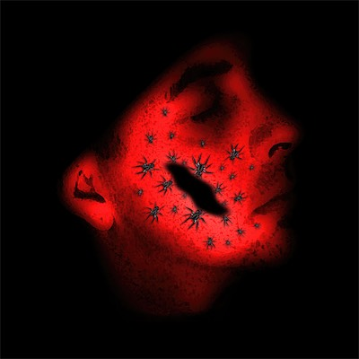
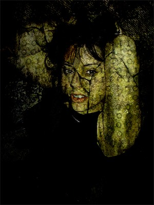
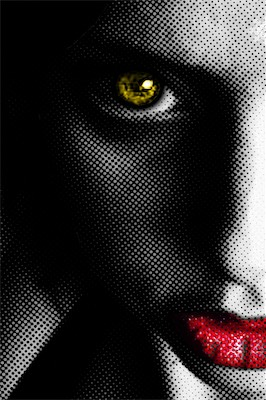
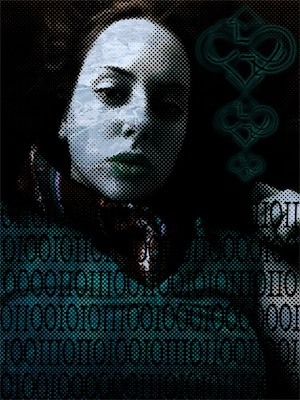
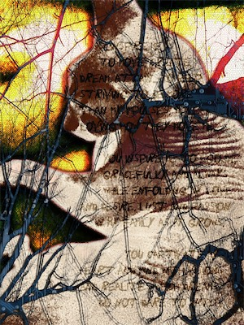

Cult of Ego
Here is my first attempt to seriously push Keynote hard and discover what it was really capable of. Understanding how to chain animation actions together opened up a world of possibilities, including building elements in and out.
With this I seriously leveled up my game in both timing and flow, but also how efficiently one can play with animation options without eating production time.
Cult of Ego I
Here is my first attempt to seriously push Keynote hard and discover what it was really capable of. Understanding how to chain animation actions together opened up a world of possibilities, including building elements in and out.
With this I seriously leveled up my game in both timing and flow, but also how efficiently one can play with animation options without eating production time.





Cult of Ego II - Ego
Here is my first attempt to seriously push Keynote hard and discover what it was really capable of. Understanding how to chain animation actions together opened up a world of possibilities, including building elements in and out.
With this I seriously leveled up my game in both timing and flow, but also how efficiently one can play with animation options without eating production time.


Cult of Ego II - Obsession
Here is my first attempt to seriously push Keynote hard and discover what it was really capable of. Understanding how to chain animation actions together opened up a world of possibilities, including building elements in and out.
With this I seriously leveled up my game in both timing and flow, but also how efficiently one can play with animation options without eating production time.


![Transparency — She was a massive proponent for inappropriate levels of transparency that gave me access to pretty much all of her personal emails. At one point, when things were going strange, I made this piece. She was also very much into the idea of basically being pregnant always. So this piece, which I had printed out for a gallery show at four by four feet, has her textured in a zebra pattern with a bunch of quotes of her own, and a baby in her womb. Kind of an intense piece. She posed in front of it when I showed it.](../resources/images/art---design/01.-cult-of-ego/cult-of-ego-ii/obsession/04_transparency@1200.jpg)





![Hypercone — An exercise in perspective and math. A ring taken, duplicated, rotated on two axes, and reduced in size, and slightly moved each time. At this angle when you look at it at, it appears as if it's bending around, but it's completely in a straight line. The reflection in the object is from the sea, the moon in the background with its reflection in the water, and the stars in the sky. This was a translation of a logo for my mom's gallery, Cone Gallery. Like the hypercube, this was the hypercone.](../resources/images/art---design/03.-3d-worlds/15_hypercone@1200.jpg)


![Chaos Circuit Eye | Omega Flesh — As with the origin of the design, I incorporated the help of AI with this one. Because of the fact that the circuit traces also look like tentacles, I had it render a version of this that looked like an octopus, except for with the exact form of the symbol. I then took and recolorized everything to match my primary symbol. Lots of layer effects, blending effects, gradients, shadows, strokes, color overlays, and a chaos field background with multiple gradients at different angles and blending effects to give the effect you see.](../resources/images/art---design/04.-the-chaos-system/02.-chaos-circuit-eye/18_chaos-circuit-eye_omega-flesh@1200.jpg)


![binary-duality — This is the first time I came up with a personal logo (in the 90s) representing what I think is a philosophy and the meaning which describes everything that could possibly exist in the universe. The phrase is 'binary-chaos', which stands for 'binary-association & chaos-theory'. And in this case, I did the inversion that I like so much. And we get binary-duality. Positive and negative symbol, infinity symbol, double pentagram, chaos symbol around the edges, and the male and female astrological signs on the minor arrows.](../resources/images/art---design/06.-logos/01_binary-duality@1200.jpg)


![Chaotic Nuclear AIDS — This is the original version of the chaos system design that I've used extensively. It was a design I got from somebody else, but it was so basic that I didn't see a problem using it in my artwork. I'm not even sure he originated it. This is very early Photoshop work, when I was still discovering how it worked. An AIDS virus in the middle, blobby skulls from the Nin video closer, nuclear bombs, and four variations with four background variations. Simple, impactful, striking imagery.](../resources/images/art---design/08.-chaos/01.-90s/01_chaotic-nuclear-aids@1200.jpg)


![binary-duality | Fire & Ice — Looking for a different way to express the concept of the nature of duality. At the time I had a plugin that could generate fire. On the right side, that's what you see, using the binary-chaos logo. On the left side is fire as well, the direction of the flames inverted, and then coated with some kind of beveling and embossing effect, maybe with a bit of plastic wrap, and a blue color scheme to give the impression of ice. Floating on a black background. I think it was pretty effective.](../resources/images/art---design/08.-chaos/02.-binary-chaos/03_binary-duality_fire-ice@1200.jpg)


![Radioactive Chaos | O.G. — Similar to some of the previous chaos pieces where I'd begun to refine my skills a bit, I came up with this little ditty. Double chaos symbol stacked in the middle, radiation sign coated in happy faces with inverted colors, a symbol from a dream that I had back in the day, two spears with a nuclear bomb and infinity symbols with a skull texture on them, two radioactive bugs, and a wobbling and warping green and purple background using a cloud texture, and those skulls again. An intense scene for sure, right up my alley aesthetically.](../resources/images/art---design/08.-chaos/04.-radioactive-chaos/01_radioactive-chaos_og@1200.jpg)
![Radioactive Chaos — I always told myself I wanted to rebuild this one. So, probably 13, 14 years later, in the mid to late aughts, I did. I added the double pentagram in the center with the double-stacked chaos symbol, some binary code, likely says chaos, the same happy face, nuclear symbol, and as I said, those two fire and ice chaos symbols on the sides. Most other elements are the same, with some graphics added, and a scorpion that I found (not what I really wanted, but it worked. I'd prefer a 3D modeled mutant bug, but I didn't have those skills).](../resources/images/art---design/08.-chaos/04.-radioactive-chaos/02_radioactive-chaos@1200.jpg)


![Glen Portrait — Using a photo of myself that I liked quite a lot, me with very long black hair, wearing red and black, and a pair of pants that I sewed myself, wearing moccasins that you can't see. I created a landscape in Bryce 3D, and then created a frame in Photoshop using four chaos symbols and the binary-chaos symbol (version 1), with some boundary edging effects. And with the center, in an attempt to blend in the two distinct spaces, I applied some kind of paintbrush effect. Not sure how effective it was, but it was something worth keeping.](../resources/images/art---design/12.-the-archives/90s/03_glen-portrait@1200.jpg)


![My Angelic Demoness — When times went rough with my first big relationship of six and a half years, and we became separated due to a death of my boss and a job that I had bet my future on, I kind of mentally crashed and crumbled, and wasn't there to support her, and so she went away. I took a bunch of skills that I had learned and combined them all together, and as best way I could, using a nude photograph of her, my skills in Bryce, a 3D model of a snail, a moon, half of my binary chaos symbol, gave her some wings and a halo, called it 'My Angelic Demoness'. Initially, she wasn't actually flattered by it, which took me aback a bit.](../resources/images/art---design/12.-the-archives/90s/11_my-angelic-demoness@1200.jpg)


![Magical Forest — This was another odd fling that I got involved with while I was on a "break" from Mecca. Probably wasn't a good idea. But just to make sure it went to shit, I went with her on a drive all the way up to Nebraska from Arizona. At her parents' corn farm, they had wild hemp growing. I took some photos of her in it, and because she also loved to smoke weed so much, I made this. It kinda looks like she's doing a Nazi salute, which I actually think is funny, and kind of on character, not that she'd agree.](../resources/images/art---design/12.-the-archives/2000s/09_magical-forest@1200.jpg)


![Lovely Planet — At one point, Apple had come out with their app called Freeform, and it was on Mac and iPad. So I decided to try it out on the iPad with the Apple Pencil, and I made this strange thing. A kind of chaos symbol. I used a bunch of symbols from the app, knocked a bunch of things out, added shadows and transparencies, a baby with radiation symbols and a syringe going into its butt, a skull with an atomic symbol and a syringe going into its eye, with a DNA strand coming out of it. It's a lot. It's bizarre. And now you get to look at it and wonder why.](../resources/images/art---design/12.-the-archives/newer/09_lovely-planet@1200.jpg)


![Coors Flyer — Not sure why the file was labeled "Coors Flyer" instead of "1st Annual Breast Cancer Awareness Ride", but I was the Production Manager, not the Art Director, so that's how I got the file. I like it. It kind of lines up with some of the styles I would use. I like the transparent, lower transparency on the graphics in the background behind the text, little side logos, the lines coming out from the side on the back to denote the different sections. That's definitely my style. Yeah, this is a good one. Gets the job done well.](../resources/images/art---design/13.-professional-work/03.-sensible-minds/12_coors-flyer@1200.jpg)


![Glen Art Show | Lost Leaf — Yes, I'm throwing ads that I made to promote my own shows into the professional work section, because I was showing my art in gallery shows and offering it up for sale. I had quite a lot of shows at the time, and I dig this kind of layout a lot. The lines with the circles, the completely invented chaos symbol in the upper left, the strange layout, binary-chaos symbol, the two ©haos Gallery symbols (bacause I didn't yet have the chaos system). I dig it. And yes, this is for Cult of Ego 2 at the Lost Leaf in Phoenix.](../resources/images/art---design/13.-professional-work/07.-glen-allan---flyers---ads/01_glen-art-show_lost-leaf-flyer@1200.jpg)


![Chaos Sculpture II | Starting Assembly — And now back in the gallery, the assembly is beginning. At the time, I decided to add little eye hooks with wires connecting between them, running along the underside, in between all of the connecting arrows. I was considering the idea of trying to arc electricity along between those lines. One design I was very interested in is a variation of this where electricity arcs in between the doubled sheets, obviously made of metal in that context. That will hopefully come one day in the future.](../resources/images/art---design/14.-sculptures/chaos-sculpture-ii/02.-chaos-sculpture-ii---process/05.-chaos-sculpture-ii-_-starting-assembly@1200.jpg)